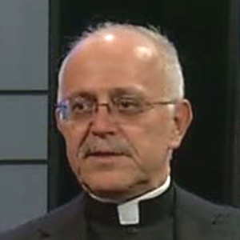
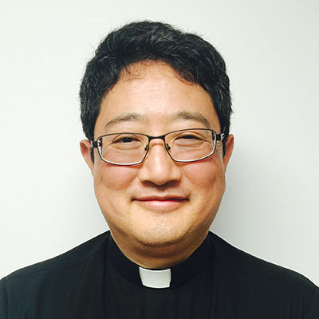
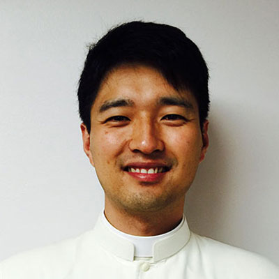

본당 소개
(1795∼1839. 축일 9월 20일)
본관은 나주(羅州), 한국 천주교회 초기 평신도 지도자. 1801년 신유(辛酉)박해 때 순교한 정약종(丁若鐘)의 둘째 아들이고, 실학자 정약용(丁若鏞)의 조카이며 세례명은 바오로이다. 부친은 실학자 이익(李瀷)의 학문을 이어 서학(西學)을 연구하고, 1784년 한국 천주교회 창설에 참여한 초기 평신도 지도자였으며, 1801년 순교하였다. 순교적 희생으로 진리를 증언한 순교자인 아버지와 신심이 유달리 깊었던 어머니 유 세실리아(柳∼)의 인도로 어려서부터 천주교 신앙을 깨우쳤다. 1801년의 신유박해 때 부친과 친형 철상(哲祥)이 서소문 밖에서 처형당하여 순교하자 7세인 정하상은 누이동생 정혜(情惠)와 어머니를 모시고 마재[馬峴, 京畿道 楊州郡 瓦阜面 陵內里 마재부락]의 큰댁으로 낙향하였다. 20세 때 단신 상경하여 교우 조증이(趙曾伊) 집에 의지하며 한국 교회를 위해 헌신하기로 결심하고 교리와 학문을 철저하게 익히기 위해 함경도 무산(茂山)에 귀양가 있는 조동섬(趙東暹, 유스티노)을 찾아가 수년 간 학덕을 닦았고, 서울로 귀환하여 한국 교회의 발전을 위한 초석으로 종횡의 활동을 펴게 된다.
성직자와 수도자
-
정욱진 토마스 신부 1973년 4월 - 1993년 1월

-
안상인 요셉 신부 1993년 1월 - 1997년 4월
-
김인성 요한 비안네 신부 1997년 4월 - 2002년 6월
-
서상봉 다니엘 신부 2002년 7월 - 2005년 7월
-
이가별 가브리엘 신부 2005년 8월 - 2013년 6월
-
김문수 앤드류 신부 2013년 7월 - 현재

-
Fr. Thomas Brosnan 1990년 9월 - 1997년 6월
-
배 Veneroso 요셉 신부 1985년 8월 - 현재
-
최완우 토마스 아퀴나스 신부 1994년 4월 - 1996년 1월
-
박성우 사도요한 신부 1996년 1월 - 1999년 8월
-
김일영 베드로 신부 1999년 8월 - 2002년 8월
-
남희봉 벨라도 신부 2000년 11월 - 2005년 1월
-
권선민 요셉 신부 2005년 3월 - 2008년 1월
-
김지황 바오로 신부 2005년 3월 - 2008년 1월
-
김대하 사도요한 신부 2008년 1월 - 2010년 1월
-
손은석 마르코 신부 2008년 1월 - 2010년 1월
-
최병권 대건 안드레아 신부 2010년 1월 - 2011년 12월
-
김동진 사무엘 신부 2010년 1월 - 2012년 10월
-
김승제 판크라시오 신부 2012년 3월 - 2014년 6월
-
정병선 프란치스코 하비에르 신부 2013년 2월 - 2016년 1월
-
남희봉 벨라도 신부 2014년 6월 - 현재
-
김철희 시몬 신부 2016년 2월 - 현재
-
배 Veneroso 요셉 신부 1985년 8월 - 현재
-
이 라데우스 수녀 1974년 8월 - 1979년
-
김 살레시오 수녀 1976년 10월 - 1979년 8월
-
이 안드레아 수녀 1977년 11월 - 1980년 8월
-
김 보나벤뚜라 수녀 1979년 2월 - 1983년 8월
-
신 디모테아 수녀 1980년 6월 - 1985년 9월
-
윤 글로리아 수녀 1982년 9월 - 1986년 9월

-
박 안셀마 수녀 1985년 8월 - 1989년 9월
-
이 리오바 수녀 1986년 9월 - 1991년 10월
-
김 베아따 수녀 1989년 8월 - 1994년 3월
-
윤 루도비까 수녀 1991년 9월 - 1995년 10월
-
전 세실리아 수녀 1994년 2월 - 1996년 4월
-
노 보나파시오 수녀 1995년 9월 - 1998년 8월
-
이 보나 수녀 1996년 3월 - 1999년 12월
-
박 모세 수녀 1998년 8월 - 2001년 3월
-
유 마리요나 수녀 1999년 12월 - 2002년 8월
-
오 아빌라 수녀 2001년 3월 - 2003년 8월
-
이 예로니모 수녀 2002년 8월 - 2005년 8월
-
강 미카엘라 수녀 2003년 8월 - 2006년 8월
-
백 보스코 수녀 2005년 8월 - 2008년 8월
-
최 베니따 수녀 2006년 8월 - 2009년 8월
-
이 안나마리 수녀 2008년 8월 - 2011년 8월
-
양 글로리엣다 수녀 2009년 8월 - 2012년 5월
-
홍 마리 코르디스 수녀 2011년 8월 - 2014년 12월
-
양 뽈리나 수녀 2012년 8월 - 2014년 10월
-
오 로시나 수녀 2014년 10월 - 현재

-
한 프랑카 수녀 2015년 6월 - 현재
-
고 노엘라 수녀 2015년 09월 - 현재
본당 연혁
대통령·국무총리·국무위원·행정각부의 장·헌법재판소 재판관·법관·중앙선거관리위원회 위원·감사원장·감사위원 기타 법률이 정한 공무원이 그 직무집행에 있어서 헌법이나 법률을 위배한 때에는 국회는 탄핵의 소추를 의결할 수 있다. 헌법재판소의 장은 국회의 동의를 얻어 재판관중에서 대통령이 임명한다. 모든 국민은 언론·출판의 자유와 집회·결사의 자유를 가진다. 공공필요에 의한 재산권의 수용·사용 또는 제한 및 그에 대한 보상은 법률로써 하되, 정당한 보상을 지급하여야 한다.
-
1973년
4월 29일 퀸즈 한인천주교회창립: Our Lady of Angelus, Rego Park, NY에서 토마스 정욱진 신부 집전으로 한국어 첫미사 (교우수 37명, 12가정)
10월 7일 아동반 지도 개시 (74년 2월 24일 주일학교 정식 개교)
12월 25일 성탄미사 참례 교우수 400명 초과
-
1974년
9월 30일 한국말 매주미사를 부르클린 교구청에서 승인
(75년 3월 21일 부르클린 교구장 무가베로 주교님의 정식인가) -
1975년
1월 5일 사목협의회 발족
3월 2일 청년회 발족
5월 25일 정토마스 신부 한인사목전임, 미국교회 보좌를 면제받음
9월 21일 구역제 실시 (75/11/11, 스테이튼 아일랜드 구역에서 첫 구역미사)
11월 9일 로사리오회 발족
-
1976년
5월 9일 어머니회 발족 (주일학교 후원을 목적으로 결성)
6월 13일 어린이 첫 영성체
8월 8일 교구청의 인가와 재정보조로 2명의 수녀 파견이 결정, 성분도회 수녀원 뉴욕분원 설치
-
1977년
1월 1일 미사후 첫 신년하례식 (이후 해마다 정초 미사후 신년하례식 거행)
1월 16일 성가대 발족
5월 4일 전교회관 인수 (76/2/1 기성회 결성, 77/2/17 교구청 인가, 77/6/12 축성)
7월 3일 중고등학생회 발족
9월 4일 토요한글학교 개학
-
1978년
10월 22일 안나회 발족 (60세 이상 여성교우 단체)
-
1979년
1월 7일 신용조합 발기인회 (79/9/17 미연방신용조합본부 인가, 79/10/21 정식 개업)
2월 18일 어린이 영어미사 시작 (주일학교, 중고등학생을 위한 주일 정기미사)
7월 29일 성령기도회 시작, 성령세미나 참가 (7/11, 교우 14명과 수녀님 두분)
8월 4일 어린이를 위한 첫 하기 캠프 실시 (25명 참가)
-
1980년
4월 13일 교리교육 (춘추 연 14회의 연수회실시 총 270명 참석)
10월 10일 중고등학생 피정 (이후 매년 봄가을 피정및 캠프 실시)
12월 7일 에덴회 발족 (60세 이상 남성 교우)
-
1981년
3월 15일 성당건립 추진위원회 개최 (81/9/27 기성회 조직)
7월 9일 남성 제1차 꾸르실료 (한국 수원교구 꾸르실료 지도단 봉사)
7월19일 한인 꾸르실료 미동부지구 사무국 발족
-
1982년
10월 24일 성당건립을 위한 대 바자회
-
1983년
1월 27일 여성 제1차 꾸르실료
2월 18일 뉴욕지구 제1차 부부피정(ME), 11가정 참가
3월 20일 한국순교복자 유해 획득, 영구보존
4월 17일 교회지(연간) 발간 결정 (10주년 기념지를 창간호로 매년 1회)
5월 5일 염수의(요셉)신부 본당 보좌신부로 부임
6월 17일 안드레아 김대건 신부 유해 획득, 봉안
12월 18일 부르클린교구 청소년 꾸르실료 (3명 참가, 이후부터 매년 참가)
-
1984년
2월 4일 안나학교 개교(여성 노인을 위한 영어, 성서, 서예, 오락지도)
6월 13일 성당건립을 위한 대지 구입
12월 2일 레지오마리애 발족 (2개 쁘레시디움으로 시작)
12월 8일 퀸즈출신 첫 수녀 탄생 (민 루시아 수녀)
-
1985년
1월 6일 성당건립을 위한 로사리오 100만단 기도운동
2월 9일 대건회 발족 (30세 이상 남녀 교우)
5월 30일 부르클린 교구장 무가베로 주교 우리교회 법인체 정식 승인
"St. Paul Chung Ha Sang Chapel and Center" 로 명명, 86/1/26 뉴욕주 등록10월 20일 교우들을 위한 성당버스 운행시작 (대건회 봉사)
-
1986년
4월 26일 제1차 평신도 성서 모임
9월 28일 주일학교와 학생미사 정식으로 시작
10월 1일 부르클린 무가베로 주교 우리성당 건축 정식 재가
-
1987년
5월 20일 새 이민법 규정에 의한 불법이민자 사면신청 대행 봉사
7월 29일 정규현 요셉 신부 부임 (학생지도 담당)
8월 16일 새성당 기공식/청년축제 (PS 20에서 개최)
-
1988년
4월 23일 신축성당 정초식 과 감사미사 (김수환 추기경 집전)
-
1990년
1월 21일 성당건립을 위한 로사리오기도 100만단 돌파
5월 5일 진명 바오로 부제 서품
8월 12일 새성전으로 이전 미사시작
9월 10일 본당 부주임신부로 토마스 브로스난 신부를 승진 임명
-
1991년
1월 31일 유원봉 아우구스티노 신부 본당 사목지원차 부임
3월 15일 새 사제관 구입
8월 4일 김육웅신부 성 세바스챤 성당에서 Woodside 와 Sunnyside 지역 한인사목 시작
9월 19일 청년 대학생 후원회 결성
10월 6일 전교수녀 1명 추가봉사 (뉴욕 성모회의 김 쏘피아마리아 수녀 부임)
-
1992년
4월 5일 성당건립 헌금 누계 500만불 돌파
9월 6일 교육관 건물 축성
9월 20일 청년 성가대 "메아리" 창단
12월 1일 유아원 개설
12월 14일 교육관에 무료 의료원 개설
-
1993년
1월 1월 정토마스 신부 은퇴 (안상인요셉 신부 취임)
3월 14일 아기방 개설 (어머니회 주관 봉사)
5월 19일 첫 번째 정기 단체장회의
6월 20일 간호사회 결성
10월 9일 하상회 창립, 초대회장 차수만
-
1994년
2월 6일 루까회 창립
3월 13일 기우회 발족
3월 27일 교적정리 (총 1024세대, 3005명, 미등록자 860명)
7월 16일 본당출신 오순정 엘리사벳 수녀 Iowa 주 갈멜수녀원에서 종신서원
12월 11일 하상회 생활정보센터 개설
-
1995년
2월 12일 본당창립 20주년 기념호 "새남터" 제7호 발간
7월 29일 주일학교 교사 MT 귀환길 교통사고발생 (2명사망, 4명중상)
-
1996년
4월 21일 성 빈체시오 아 바울로회 설립 총회
9월 15일 본당 각 성가대 고유명칭 제정 (한울림, 마니피캇, 메아리, Teens Choir)
본당 ‘터’ 농악단 창설 (초대단장 이종구)12월 1일 32Ave 새로 구입한 두채의 가옥 Open house
-
1997년
2월 2일 청년협의회 발족
2월 9일 베이사이드 한인 공동체 신설 (St. Robert Bellarmine 성당)
2월 23일 성 빈첸시오 아 바울로회 해체
4월 15일 부르클린 교구청 한인 공동체 코디네이터로 Ronald Marino 신부님 임명
6월 14일 김학범 알퐁소 부제님 사제 서품식
6월 16일 부르클린 교구장, 한인 공동체에 사목회 해체 지시
7월 12일 초대 주임신부님 정욱진 토마스 신부님 선종
7월 20일 김알퐁소, 남벨라도, 이가브리엘 신부님 첫미사 집전
8월 13일 본당 사도직협의회 조직 (회장 장동철)
9월 7일 제1회 본당 체육대회
9월 28일 본당 연령회 구성 (초대회장 원 안셀모)
10월 26일 13년간 봉직하신 토마스 수사님 송별연
11월 2일 경로 봉사회 조직 (초대회장 박기효)
11월 9일 에덴회를 "요셉회"로 변경
11월 11일 제1회 경로의 날 행사
11월 30일 사도직협의회 해체
12월 8일 김문수 부제 서품식
-
1998년
5월 24일 본당설립 25주년 기념미사 (토마스 데일리 주교님 집전)
6월 27일 김문수 대건 안드레아 사제 서품식
9월 6일 반석회 명칭을 베드로회로 변경
9월 20일 제2회 본당의날 야유회및 체육대회
10월 11일 베드로회 발기 총회
10월 18일 본당설립 25주년 기념 바자회
-
1999년
3월 2일 노인교리반 개설
3월 28일 본당 소식지 창간호 "겨자씨"
4월 25일 성소후원회 조직
5월 24일 보나 수녀님 25주년 은경축
6월 20일 생활상담쎈터 설립
8월 22일 성당지하강당 주방개축공사 완료 축성
8월 31일 사목위원 선거 실시 (박서규 회장 선출)
9월 19일 주보성인 정 바오로 정하상 축일 미사, 토마스 데일리 주교님 집전
12월 1일-3일 본당 모든 신자들을 위한 2000년 대희년 특별피정
-
2000년
2월 8일 본당 전신자 성서공부 11월 28일 까지
3월 24일 고등부 성령세미나 45명 참가
6월 11일 대희년 성세 신심행사
12월 22일 교육회관 건립 기금 대 바자회
-
2001년
5월 20일 까리따스회 설립
5월 20일 건축위원 준비위원회
9월 2일 정진석 대주교님 본당방문 교구장 데일리주교님과 공동미사 집전
10월 7일 카톨릭센타 (교육관) 건립위원회 총회
11월 4일 카톨릭센타 공청회
-
2002년
3월 19일 기초성령세미나
3월 24일 본당 장학회 설립
12월 25일 전신자 기도봉헌 운동
-
2003년
1월 6일 – 1월 11일 전신자 기도 봉헌 운동
8월 15일 본당 일치와 한인 가톨릭 공동체의 발전을 위한 묵주기도 100만단 봉헌 시작
-
2004년
6월 6일 고 정욱진 신부님 추모음악회
6월 17일 김수환 추기경님 본당 방문
12월 25일 니콜라스 디마지오 주교님 본당 방문
-
2005년
1월 16일 – 3월 20일 성서 필사대회
4월 2일 교황 요한바오로2세 선종
4월 19일 교황 베네딕토 16세 선출
7월 10일 초, 중, 고등부 주일학교 및 교사들의 Love Concert
7월 17일 본당일치와 한인 가톨릭 공동체의 발전을 위한 묵주기도 100만단 봉헌 완료
-
2006년
1월 30일 권선민 부주임 신부님 사제서품 6주념 기념식
3월 25일 교적 재등록을 위한 설문조사 시작
4월 23일 니콜라스 디마지오 주교님 본당방문 중고등부 견진성사 집전후 본당승격 소식 발표
5월 24일 – 28일 김찬용 신부님 주재 전신자 대상 성령세미나
-
2007년
7월 8일 제6회 본당 장학회 장학금 수여식
7월 12일 고 정욱진 토마스 신부님 10주기 추모미사
9월 30일 평양교구 설정 80주년 "감사비" 제막식 – 메리놀 외방 선교회
10월 10일 제 4교육관 부지확정
11월 11일 남희봉 벨라도 신부님 취임미사 (Church of the holy spirit)
-
2008년
1월 17일 김대하 사도 요한 신부님 취임
1월 31일 손은석 마르코 신부님 취임
6월 22일 제7회 본당 장학회 장학금 수여식
6월 28일 - 6월 29일 교황청 내사원 교령 1성 바오로 사도 탄생 2000주년 기념 특별 전대사 수여
7월 6일 새남터 배부 (1998년 이후 처음)
10월 5일 본당 엘레베이터/고해소/유아실 완공기념 축성식
-
2009년
2월 16일 고 김수환 스테파노 추기경 선종 분향소 설치
2월 20일 고 김수환 스테파노 추기경 추모 미사
5월 3일 개인차량 스티커 부착 (효울적인 주차장 차량관리)
5월 3일 고등학생 견진성사(Sishop Cisneros 집전)
5월 3일 성소주일행사, Marian Shrine (한국순교 성인 25주년 기념)
6월 7일 "교회와 교황을 위한 봉사상" 진명 부제 수상
(Pro Ecclesia et Pontifice Cross) 베넥딕도 16세 교황을 대신하여 주교님 수여6월 19일 사제의 해 선포 (성 요한 마리아 비안네 사제 선종 150주년 기념)
6월 21일 혼인 조당 해소를 위한 봉사위원회 발족 (교구 법원에 조당 해소와 혼인 무효판결 신청)
6월 21일 유권자 등록접수 (교구차원에서 가톨릭 교회의 권익을 위해 전체유권자 파악)
8월 27일 수녀 인사(최 베니따 수녀 이임, 양 글로리엣다 수녀 부임)
8월 28일 - 30일 김웅렬 토마스 아퀴나스 신부님 특강 "성숙한 신앙인"
9월 6일 - 13일 성 김대건 안드레아 신부 유해 경배
(본당 성전에 모시고 "103위 한국 성인 호칭기도" 및 경배)9월 13일 한국순교 성인 시성 25주년 기념 연합 음악회
(교구 한인공동체 합동: Bayside 성당)9월 20일 한국순교 성인 시성 25주년 현향 미사: 궁중무용 및 국악미사
(교구 한인공동체 합동: Woodside 성당)10월 23일 브루클린 교구 2009 Shining Star Award 시상식
본당 수상자: 조원훈 바오로(전 생활상담소장)10월 25일 - 11월 29일 교적 정리 (각 구역 반 확인 작업)
11월 1일 사제관 건립을 위한 기금모금 시작 (본당 바자회)
12월 20일 사제관 건립 위원회 발족
-
2010년
1월 4일 김대하 사도요한 보좌신부 이임
1월 11일 최병권 대건 안드레아 보좌신부 부임
1월 17일 본당 로고 변경
1월 26일 김동진 사무엘 보좌신부 부임
1월 30일 손은석 마르코 보좌신부 이임
2월 16일 고 김수환 추기경 선종 1주기 추모미사
3월 7일 개인 차량 스티커 안내 2차 실시(효율적인 주차장 차량관리)
3월 20일 - 4월 12일 인구조사 설문지 작성 도우미 센터 운영
4월 18일 고등학생 견진성사 28명 카지아노 주교 집전
6월 11일 "사제의 해" 마감
7월 23일 - 25일 항창연 베네딕도 신부님 특강 "언제나 기뻐하십시오"
9월 20일 한국 순교자 대축일 미사(본당에서 교구 한인 공동체 합동미사)
9월 28일 교구 성전관리위원회와 교육관과 사제관 신축 계획 협의
(교구청 신축 초안 설계 제출 요청)12월 19일 신자카드 및 교무금 약정서 배포
-
2011년
1월 13일 교구 성전관리 위원회에 초안 설계 및 공사비에 대한 presentation
4월 3일 "교육관과 사제관 건립을 위한 기도" 매 미사 후 봉헌
4월 12일 교구청 성전관리 위원회로부터 교육관 건립 승인
5월 15일 교육관과 사제관 건립을 위한 묵주기도 100만단 봉헌시작
5월 29일 교육관 건립위원회 발족
7월 18일 매일 미사 전 교육관 건립을 위한 묵주기도 5단 봉헌시작
8월 24일 Building Department에 신축도면 접수
8월 26일 수녀 인사 (이 안나 마리 수녀 이임, 홍 마리 코르디스 수녀 부임)
9월 18일 교육관 건립 장소 철거공사 (Demolition)
11월 12일 본당 출신 김영아 세라핌 수녀 종신서원 (성가정의 작은 자매 수녀회)
12월 8일 대전교구 파견 신학생 부제 서품식
(부제: 권선중 세례자 요한, 최재영 파스칼)12월 30일 최병권 대건 안드레아 보좌신부 이임
-
2013년
1월 5일 김대욱 어거스틴 부제 서품식
2월 11일 교황 베네딕토 16세 사임 발표
2월 22일 정병선 프란치스코 하비에르 신부님 부임
3월 13일 제266대 교황 프란치스코 1세 선출
6월 1일 김대욱 어거스틴 사제 성품성사
6월 29일 김영하 바오로 사제 성품성사
7월 1일 김문수 안드레아 신부님 부임
8월 13일 제 12회 성 바오로 정하상 장학금 수여식
8월 19일 임효진 마리아 베네딕토 수녀님 첫 서원
11월 24일 김문수 앤드로 주임신부님 취임미사 (집전: 니콜라스 디마지오 주교님)
-
2014년
7월 20일 정토마스 교육관 사제관 축성식
8월 13일 - 18일 교황 프란치스코 한국방문
8월 3일 제25기 사목회 취임식